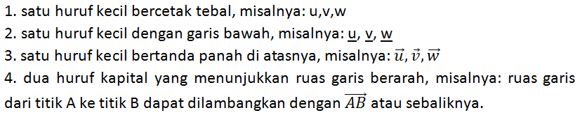
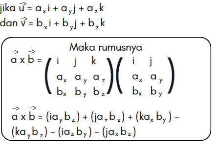
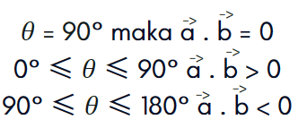
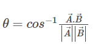

Vektor
Vektor adalah ruas garis berarah yang memiliki besaran (nilai) dan arah tertentu. Secara geometris, suatu vektor dapat digambarkan sebagai ruas garis berarah dengan panjang ruas garis menyatakan besar vektor dan arah ruas garis menyatakan arah vektor
• Sebuah vektor dapat dinotasikan dengan beberapa ketentuan, diantaranya:

• Perkalian vektor
Perkalian vektor dibagi menjadi 2 yaitu :
1. Perkalian Skalar dengan Vektor
2. Perkalian Vektor dengan vektor
Perkalian Vektor dengan Vektor terbagi menjadi 2 :
a) dot product
b) cross product
Perkalian Skalar dengan Vektor mempunyai Rumus sebagai berikut :
• Vektor dengan Vektor
1. Dot product
Perkalian Dot dapat disebut juga sebagai Perkalian Skalar,
dikarenakan perkalian tersebut akan menghasilkan skalar meskipun dua pengali nya adalah vektor.
Rumus :
2. Cross product
Perkalian Silang dapat disebut juga sebagai Perkalian Vektor,
dikarenakan Perkalian ini akan menghasilkan Vektor yang lain.
Rumus :

• Sifat-Sifat

• Sudut Antara Dua Vektor
Besaran vektor mempunyai besar dan arah, sedangkan besaran skalar hanya mempunyai besar saja,
tidak mempunyai arah. Sebuah vektor dapat direpresentasikan dalam bentuk berikut:
Sudut antara dua vektor dapat dihitung dengan menggunakan rumus berikut :

− Contoh Soal Dot Product
− Contoh Soal Cross Product